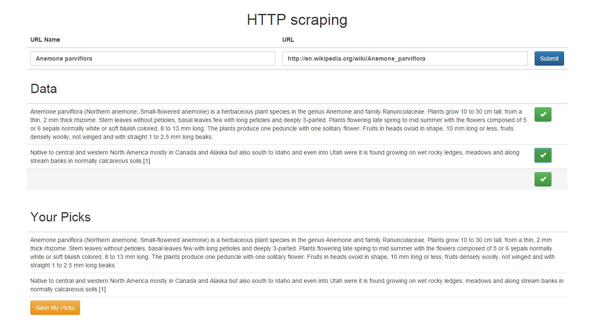

Experiment 40: Web Scraping using MEAN stack (Storing data in MongoDB)
Documentation
As we saw in the previous experiment, we can see that in this one
we will move a step forward and add the data that the user wantes to save
after selecting and deselecting from the list of scraped data into the database
MongoDB.
Screenshot of the above mentioned functionalities:

Screenshot of the data being stored in the Database MongoDb: